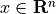
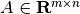
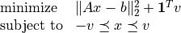
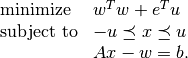

L1-norm regularized least-squares¶
We consider a least-squares problem with  -norm
regularization
-norm
regularization
(1)¶
with variable  and problem data  and  . The problem is equivalent to a QP
. The problem is equivalent to a QP
(2)¶
with  variables and constraints. The problem can
also be written as a separable QP
variables and constraints. The problem can
also be written as a separable QP
(3)¶
Documentation
Solvers for the -norm regularized least-squares problem are
available as a Python module l1regls.py
(or l1regls_mosek6.py or l1regls_mosek7.py for earlier versions of CVXOPT that use MOSEK 6 or 7). The module implements the following three functions:
 .
.Example
from l1regls import l1regls
from cvxopt import normal
m, n = 50, 200
A, b = normal(m,n), normal(m,1)
x = l1regls(A,b)